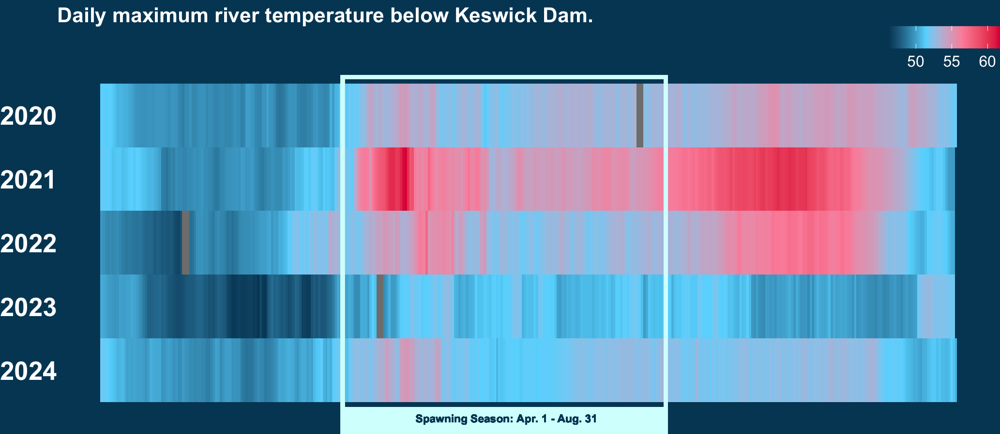

Visualizing An Upstream Battle For Winter-Run Chinook in California
How I Created My Infographic in R
Author
Nicole Pepper
Published
March 11, 2025
Salmon populations in California have faced significant challenges over the past century. Today, the State’s remaining salmon populations continue to battle environmental challenges introduced by diversions and dams built throughout the 1890s to 1960s, which have led to decreased flows, decreased water quality, and increased water temperatures. These barriers have restricted access to historic spawning habitat and impacted the free flow of cool river water, critical for their survival.
Large male Chinook Salmon, California Department of Fish & Wildlife
Winter-Run Chinook salmon, only found in the upper Sacramento Valley, have been particularly hit hard by these environmental challenges because they uniquely spawn during the hot summer months when river and ambient temperatures are often at their hottest. In the early 1990s winter-run Chinook narrowly escaped extinction. Every year from November to August, winter-run Chinook, embark on an upstream journey from the San Francisco Bay to the upper Sacramento River Valley. Today, salmon travel as far north as Keswick Dam, which completely blocks access to their historic spawning grounds.
Aerial image of Keswick Dam, Bureau of Reclamation
Their persistent battle to survive has inspired my infographic, “An Upstream Battle for Winter-Run Chinook in California”.
With this infographic, I explore the following questions: 1) How have dams impacted winter-run Chinook salmon habitat? 2) How has historic Chinook salmon abundance changed over time for winter-run Chinook? (spoiler - winter run chinook salmon are on the endangered species list) 3) How does stream water temperature impact Chinook salmon abundance for winter-run salmon?
My goal for the infographic is to raise awareness about the challenges salmon populations in Northern California face, particularly winter-run Chinook salmon, and to inspire community engagement and approval for conservation initiatives that support this critical species. My intended audience for the piece are the general public, community stakeholders, conservation and fisheries managers, as well as environmental advocates.
Salmon Habitat Data:
For Question #1, I compiled a few shapefile datasets to illustrate the impact of dams on salmon habitat including:
a boundary of the Sacramento-San Joaquin River Delta and a line feature for the Sacramento River from [NOAA Fisheries’ Salmon Critical Habitat database for the West Coast Region] (https://www.fisheries.noaa.gov/resource/map/critical-habitat-maps-and-gis-data-west-coast-region)
a point feature for Keswick Dam from the i17 California Jurisdictional Dams dataset from California Open Data Portal
I also gathered other statistics on the impact of dams on Chinook salmon habitat from NOAA Fisheries
Salmon Population Data:
For Question #2, I used a salmon population dataset from The Nature Conservancy. This dataset provides annual estimates of adult population size for various salmon species, including winter-run Chinook, across California. I also gathered other statistics including the percent of historic abundance from NOAA Fisheries
Stream Temperature Data:
For Question #3, I got stream temperature data from California Department of Water Resources at the California Data Exchange Center. I retrieved data from the Kewsick site, right below Keswick Dam, which is now a critical spawning location for Chinook, since it is the furthest north reach that is accessible for fish. The dataset provides hourly stream temperature readings from 2020 - present.
Two of the key takeaways that I want viewers to gather from my infographic include:
Winter-Run Chinook salmon populations have faced a severe decline. In the 90s, Winter run Chinook narrowly avoided extinction, as their population fell below 200, which earned them a spot on the endangered species list.
Their battle for survival continues. Warm river temperatures continue to threaten spawning success, as river temperatures in recent years, regularly exceed the minimum temperature needed for eggs to successfully spawn.
Below are a few of the key design choices that I made for the infographic: 1) Colors: For my color palette, I chose a variety of shades of blue and reddish-pink. The blue represents water and the river that is critical habitat for the salmon. The pink is inspired by Chinook salmon males, which often take on a reddish-pink hue during spawning, though I must say that my hot pink is a bit exaggerated. I also ensured that the colors that I chose were colorblind friendly. 2) Graphic form: The graphic form that I centered my piece around was a filled-area plot of winter-run Chinook population from the 1970s to 2024. When I saw the shape of the graph, on its own it clearly communicated the dramatic decline of the population. After doing some research, I added annotations to a few important historic events that were illustrated in the shape of the graph. Including when the population dropped below 200 in the early 1990s, when there was a 5-year period of mandatory increased delta release flows which temporarily bumped up the population, and when a rehabilitation project introduced 20K juvenile Chinook into Battle Creek, a sub-basin of the Sacramento River. Additionally, since the piece is closely centered around the impact of dams and reduced flows, I incorporated an illustration of a dam, so that the graph looks like water flowing out of the dam.
One of the biggest challenges that I faced was how to communicate everything that I wanted in a cohesive. I did a ton of research and found out a bunk of interesting facts and patterns that I thought helped put together the species. So it took me a lot of iterations to figure out how to fit everything. One of the most challenging elements for me to figure out was how to incorporate river temperature data. I tried a couple variations of a heatmap, both the continuous and the calendar style heatmaps, to show river temperatures over the past few years. At first I felt like the continuous heatmap was too detailed for my infographic so I tried to simplify the graph by aggregating and summarizing by month in a calendar style heatmap - however, even though at first look the graphic looked simpler it actually took more time to digest and interpret and it lost important details, showing temperatures day by day. After discussing with peers, I ended up going with the continuous heatmap graph.
At the start of project, I didn’t have a very clear vision for the final outcome. My early iterations looked at all salmon species and through data exploration I ended up discovering the impactful story of the decline of winter-run Chinook. I ended up doing a lot of research on the winter-run Chinook and it really helped me craft a strong narrative.
An early concept for what I wanted my final infographic to look like.
I’m especially proud of the salmon population over time data viz, which was the first graph that I put together with the data and ended up being the center piece for the infographic. Although it’s a simple area chart, I think the annotations help add clarity by highlighting the key takeaways. Additionally, by adding the dam illustration and styling the graph in a way that makes it look like water flowing from the dam, adds visual impact and helps tie together the story.
Here is my infographic “An Upstream Battle” - I hope that you enjoy!
Workflow
Below is an outline of my workflow for each of the individual graphs. All of my grpah elements were designed in R-Studio. After exporting the graphs, I uploaded them into Affinity to incorporate illustrations and for designing the final layout.
Create Stream Chart of WR-Chinook Population Over Time
# --- Filled stream chart for winter-run salmon abundance ----# Clean and filter data for winter-run chinookwinter_salmon <- salmon_ca |>filter(c_name =="Chinook") |>filter(r_timing =="Winter-run Chinook") |> dplyr::group_by(y_end, r_timing) |> dplyr::summarise(abun_estimate =sum(abun_estimate, na.rm =TRUE),.groups ="drop") # Define plotggplot(data = winter_salmon,aes(x = y_end,y = abun_estimate,fill = r_timing)) +# Add stream geometry for salmon abundance over timegeom_stream(type ="ridge") +# Define color schemescale_fill_manual(values ="#65D8FE") +# Label y axis with K for thousandsscale_y_continuous(labels = scales::label_number(scale =1e-3,suffix ="K"),breaks =c(10e3, 30e3, 50e3)) +# ---- Add annotations ----# Add a bracket for increased delta release ----geom_segment(aes(x =2000, xend =2000,y =9500, yend =11000),color ="#65D8FE",size = .25) +geom_segment(aes(x =2006, xend =2006,y =9500, yend =11000),color ="#65D8FE",size = .25) +geom_segment(aes(x =2000, xend =2006,y =11000, yend =11000),color ="#65D8FE",size = .25) +# Add red arrow for 1994 - population less than 200 ----annotate("text",x =1993, y =5000, label ="↓",color ="#FC90A9",size =8) +# Add population annotation for 1994annotate("text", x =1993, y =16000, label ="Population Drops\nto less than 200",color ="white",size =3,fontface ="bold") +# Add endangered annotation for 1994annotate("text", x =1993, y =10000, label ="Put on the endangered\n species list",color ="white",size =2.5) +# Add battle creek annotation for 2018annotate("text",x =2018, y =9000, label ="↓",color ="white",size =8,fontface ="bold") +# Add annotation for 2018annotate("text",x =2018, y =15000, label ="20k juvenile Chinook\nreleased in Battle Creek",color ="white",size =2.5) +# Add bracket annotationannotate("text",x =2003, y =15000, label ="20% Increase\nin Delta Release",color ="white",size =2.5) +labs(title ="In the 90s winter-run Chinook narrowly avoided extinction",y ="Estimated\nWinter-Run\nChinook\nAdult\nPopulation",fill ="Return Type") +# Define themetheme_minimal() +theme(plot.title =element_text(face ="bold",color ="white",size =12),axis.text.x =element_text(size =10,face ="bold",color ="white"),axis.text.y =element_text(size =10,face ="bold",color ="white"),axis.title.y =element_text(size =11,face ="bold",color ="white",angle =0,vjust = .5),axis.title.x =element_blank(),panel.grid =element_blank(),axis.ticks =element_blank(),plot.background =element_rect(fill ="#004564",color =NA),legend.position ="none" )
Create Heatmap of River Temperature Over Time
# ---- Calculate average and max daily stream temperature ----daily_avg_temp_kes20 <- kes_stream_temp |>group_by(day_of_year, year) |>summarise(avg_temp =mean(value, na.rm =TRUE),max_temp =max(value, na.rm =TRUE)) |>ungroup()# Create heatmap of Keswick stream temperature by day of yearggplot(daily_avg_temp_kes20,aes(x = day_of_year,y =factor(year), # facet by yearfill = max_temp)) +geom_tile() +coord_cartesian(clip ="off") +# Add a box around April 15 to August 31geom_rect(aes(xmin =as.numeric(strptime("04-15", "%m-%d")$yday),xmax =as.numeric(strptime("08-31", "%m-%d")$yday),ymin =-Inf,ymax =Inf),color ="#D5FFFD",fill =NA,size =1.5) +# Add a small rectangle below the spawning season datesgeom_rect(aes(xmin =as.numeric(strptime("04-15", "%m-%d")$yday),xmax =as.numeric(strptime("08-31", "%m-%d")$yday),ymin =0,ymax = .4),fill ="#D5FFFD",color ="#D5FFFD",size =1) +# Label spawning seasongeom_text(aes(x = (as.numeric(strptime("04-15", "%m-%d")$yday +1) +as.numeric(strptime("08-31", "%m-%d")$yday +1)) /2,y =0.25,label ="Spawning Season: Apr. 1 - Aug. 31"),color ="#004564",fontface ="bold",size =3) +scale_fill_gradientn(colors = temp_palette) +scale_y_discrete(limits =rev(levels(factor(daily_avg_temp_kes20$year)))) +labs(title ="Daily maximum river temperature below Keswick Dam.") +theme_void() +theme(plot.title =element_text(color ="white",face ="bold",size =16),axis.text.y =element_text(color ="white",face ="bold",size =20), axis.ticks.y =element_blank(),plot.background =element_rect(fill ="#004564",color =NA),legend.text =element_text(color ="white",size =12),legend.title =element_blank(),legend.position ="top",legend.justification =c(1, 1))

Create Stacked Bar Chart Showing Proportion of Spawning Season Days That Met Temp Theshold
# ---- Calculate days exceeding the threshold of 53.3°F ----# Define thresholdthreshold <-53.5# Flag days where any hourly observation exceeds the thresholddaily_exceedance <- kes_stream_temp |>group_by(year, month, obs_date) |>summarise(exceed_threshold =as.integer(any(value > threshold,na.rm =TRUE))) |>ungroup()# ---- Filter data for spawning season (April - August) ----spawning_exceedance <- daily_exceedance |>filter(month %in%c("Apr", "May", "Jun", "Jul", "Aug")) |>group_by(year) |>summarise(exceed_days =sum(exceed_threshold),total_days =n()) |>mutate(non_exceed_days = total_days - exceed_days) |>pivot_longer(cols =c(exceed_days, non_exceed_days), names_to ="exceed_type", values_to ="days") |>mutate(proportion = days / total_days)# ---- Stacked bar chart showing proportion per year that exceeded or didn't ----ggplot(spawning_exceedance, aes(y =factor(year,levels =rev(unique(year))), x = proportion, fill = exceed_type)) +geom_bar(stat ="identity",color ="white",size =0.5) +# Add labels for percentagegeom_text(aes(label =ifelse(round(proportion *100) >=15, paste0(round(proportion *100), "%"), "")),position =position_stack(vjust =0.5), color ="white", fontface ="bold",size =12) +scale_fill_manual(name ="Temperature Status", values =c("exceed_days"="#F94B74", "non_exceed_days"="#20566E")) +scale_x_continuous(labels = scales::percent) +labs(title ="Percent of spawning season days that met and exceeded the threshold") +theme_minimal() +theme(plot.title =element_text(face ="bold",color ="white",size =20,hjust =0.5),axis.text.x =element_blank(),axis.text.y =element_blank(),axis.title.x =element_blank(),axis.title.y =element_blank(),panel.grid =element_blank(),axis.ticks =element_blank(),plot.background =element_rect(fill ="#004564",color =NA),legend.position ="none")
Final Infographic:
Acknowledgments:
This assignment was created for UCSB MEDS, EDS 240 - Data Visualization & Communication. Thank you to our professor Sam Cisk and teaching assistants Annie Adams and Sloane Stephenson for their wisdom and support throughout the class.